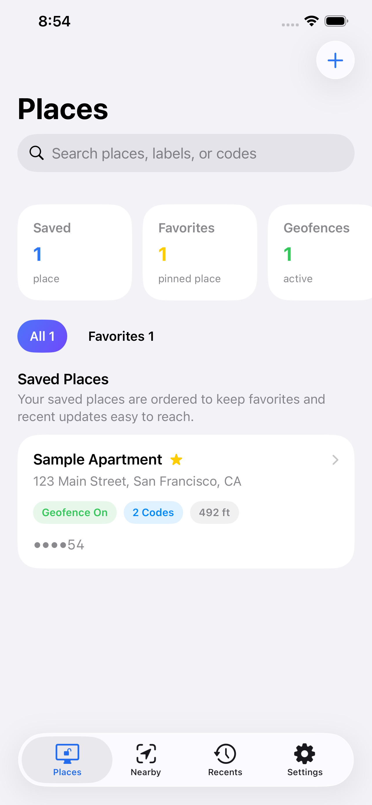
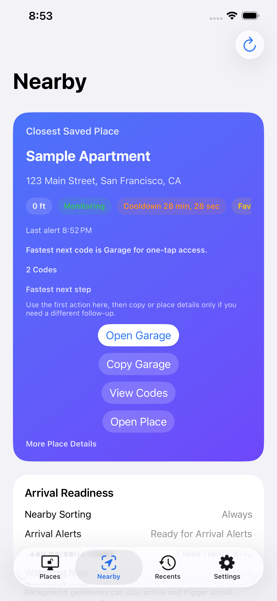
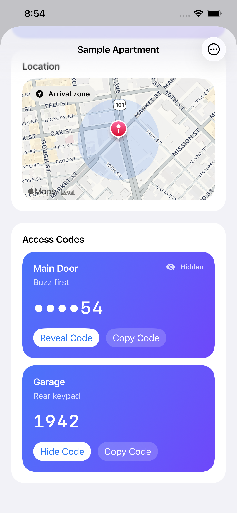
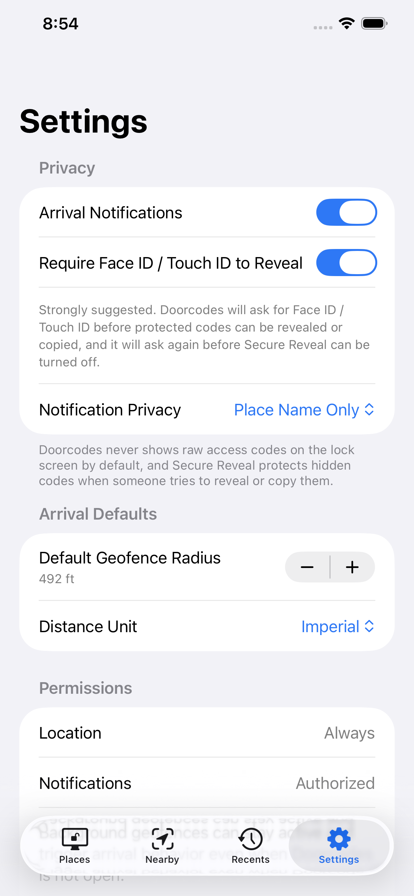
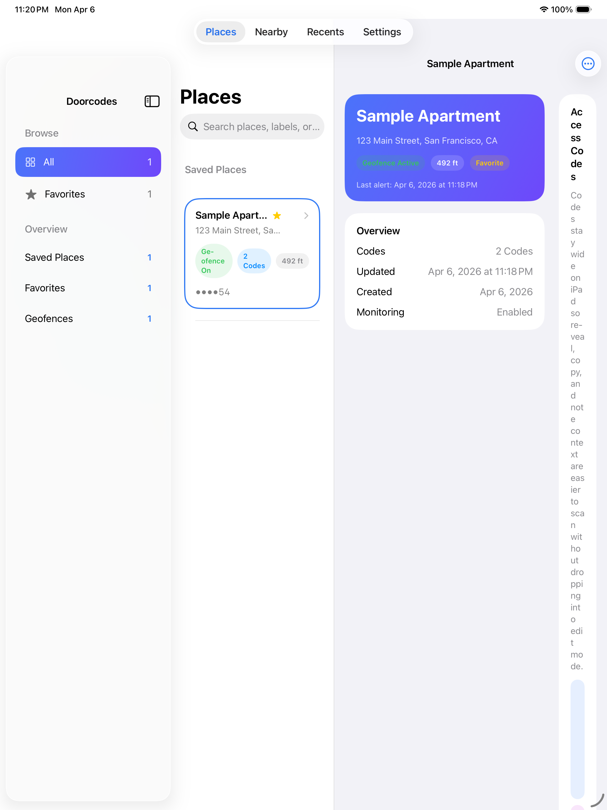
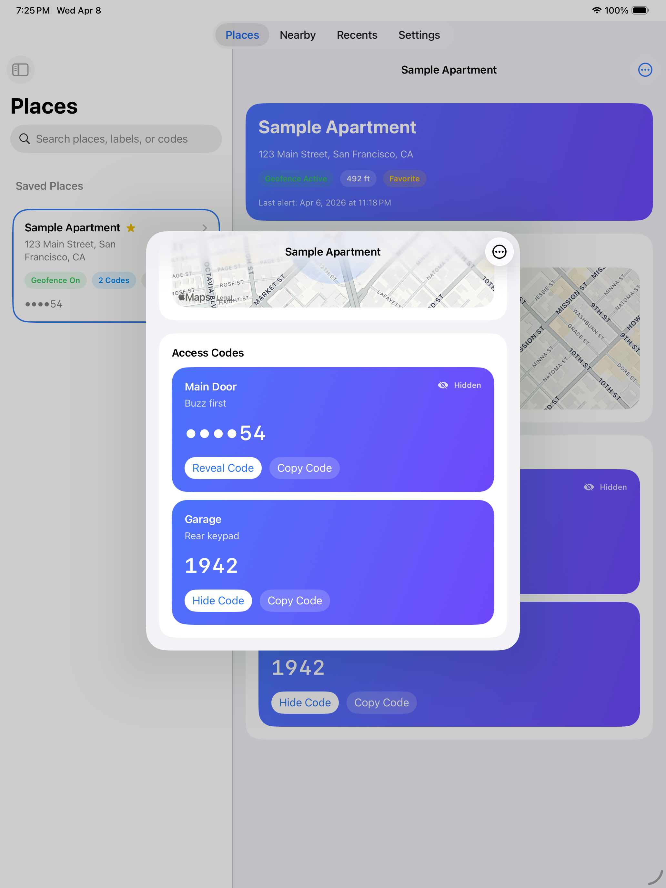

Save one place, multiple codes
Store labels, notes, and more than one code for the same address so entry details stay grouped by where they belong.
DoorCodes
DoorCodes keeps gate codes, garage entries, apartment buzzers, and office access details organized by place so the right code is ready when you need it most.
Now live on the App Store · April 2026
Available now for iPhone and iPad.
Store labels, notes, and more than one code for the same address so entry details stay grouped by where they belong.
Nearby and Recents help you get to the right saved place without scrolling through every gate, garage, or building you have ever stored.
Secure Reveal and privacy-safe reminders help protect hidden access details from quick glances, lock screens, and accidental oversharing.
In The App
A quick look at the actual iPhone and iPad experience, using the same captures shown in the App Store listing.






Why It Exists
DoorCodes is for real-world everyday friction: apartment complexes, office entries, side gates, garages, and shared spaces where the hard part is not remembering the code exists, but finding it at the right moment.
When you choose arrival reminders, DoorCodes is built to keep those alerts useful and privacy-safe instead of turning them into lock-screen clutter.
You can keep DoorCodes fully on-device or turn on Cloud Sync if you want your private iCloud account to carry that data across your own devices.
Free vs Plus
DoorCodes is designed to be useful before you pay. DoorCodes Plus is a one-time unlock for people who need more saved places or private iCloud sync across their own Apple devices.
Why People Use It
DoorCodes is less about storing a code and more about reducing the friction that happens when you are outside, carrying something, or trying to get in quickly.
Everyday Utility
DoorCodes works best for the places you revisit: apartment buildings, garages, side doors, office suites, storage gates, and other routine access points where the right code should be easy to reach without exposing too much.
Support & Privacy
Start with the DoorCodes FAQ for quick answers about reminders, permissions, Cloud Sync, and Secure Reveal. If you still need help, email UrbanZenMaster@gmail.com. We aim to reply within 3 business days.
Available Now
DoorCodes focuses on fast access, privacy, and simple organization on the Apple devices people are most likely to use at the door.